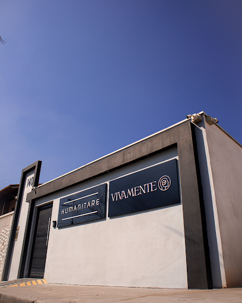

Na Vivamente, você encontra atendimento multidisciplinar, profissionais qualificados e um ambiente preparado para cuidar da sua saúde com atenção, respeito e acolhimento.
Onde estamos: R. Oswaldo Micai, 140 — Vila Bandeirantes, Itu — SP, 13313-042
A Vivamente nasceu com o propósito de tornar o cuidado com a saúde mais próximo, humano e completo. Entendemos que cada pessoa possui uma história, necessidades diferentes e merece ser atendida com atenção verdadeira.
Por isso, reunimos diferentes especialidades em um mesmo espaço, facilitando o acesso a profissionais qualificados e proporcionando uma experiência de atendimento mais integrada.
Mais do que oferecer consultas, a Vivamente busca construir relações de confiança. Desde o primeiro contato até o acompanhamento de cada paciente, trabalhamos para que todas as pessoas se sintam respeitadas, acolhidas e seguras.
Somos uma clínica multidisciplinar preparada para atender você e sua família com qualidade, responsabilidade e cuidado em cada detalhe.
"Na Vivamente, cuidar da saúde é também cuidar da história de cada pessoa."

Encontre profissionais de diferentes áreas preparados para oferecer um atendimento individualizado, respeitando as necessidades de cada paciente.
Avaliação, acompanhamento e cuidado com a saúde mental, considerando as necessidades individuais de cada paciente.
Agendar consultaCuidado com a saúde da mulher em diferentes fases da vida, com atendimento atento, respeitoso e individualizado.
Agendar consultaAvaliação e acompanhamento da saúde da pele, cabelos e unhas, com orientação profissional adequada para cada necessidade.
Agendar consultaAvaliação das funções cognitivas, emocionais e comportamentais, auxiliando na compreensão das necessidades de cada paciente.
Agendar consultaUm espaço de escuta, acolhimento e acompanhamento para questões emocionais, comportamentais e relacionadas à qualidade de vida.
Agendar consultaOrientação nutricional e planos alimentares personalizados para promover saúde, bem-estar e equilíbrio de acordo com as necessidades de cada paciente.
Agendar consultaAtendimento médico inicial, preventivo e integrativo, auxiliando no diagnóstico e direcionamento para cuidados especializados.
Agendar consultaEntre em contato com nossa equipe para consultar disponibilidade, profissionais, especialidades atendidas e regras de cobertura do seu plano.
* A disponibilidade de atendimento por convênio pode variar conforme a especialidade, o profissional e as condições do plano. Consulte nossa equipe.
Tudo feito de forma rápida diretamente pela nossa equipe.
Clique no botão de WhatsApp aqui no site.
Forneça a especialidade ou o atendimento desejado.
Nossa equipe apresentará os horários e médicos disponíveis.
R. Oswaldo Micai, 140 — Vila Bandeirantes, Itu — SP, 13313-042
Converse com nossa equipe, consulte os horários disponíveis e encontre o atendimento adequado para você.
Agendar consulta pelo WhatsApp